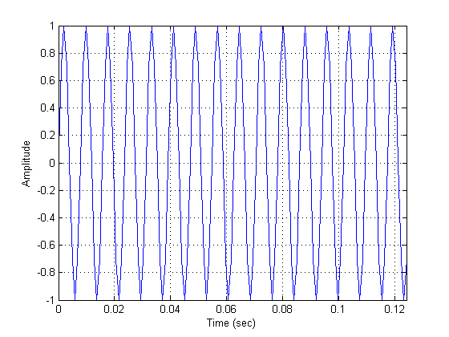
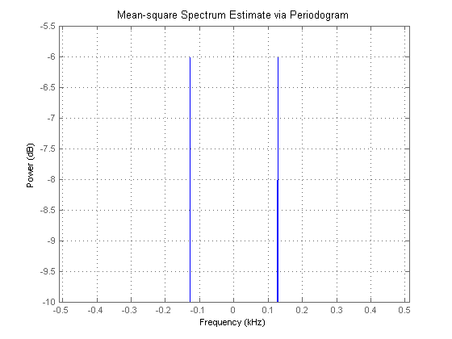
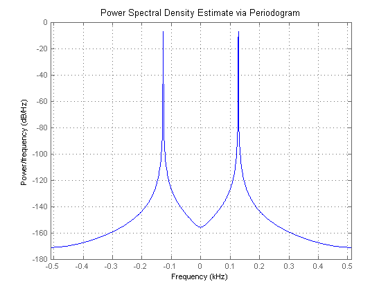
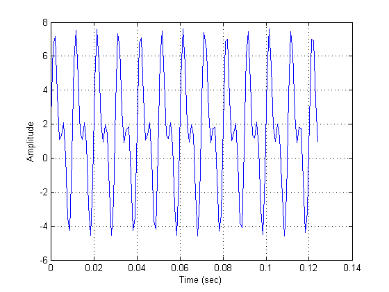
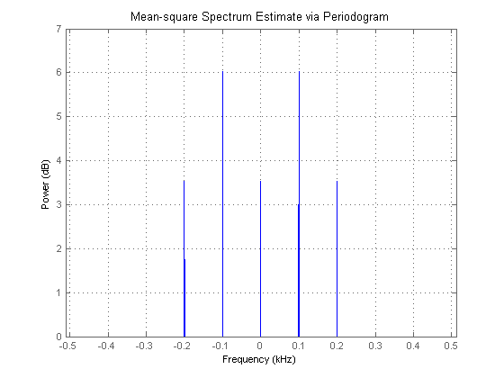
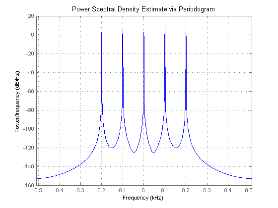

This demonstration will focus on power signals, specifically deterministic periodic signals. Although continuous in time, periodic deterministic signals produce discrete power spectrums. For this reason we will use mean-square (power) to measure the signal's power at a specific frequency.
We will provide two examples of how to measure a signal's average power. The examples will use sine waves and assume a load impedance of 1 Ohm.
In general signals can be classified into three broad categories, power signals, energy signals, or neither. Deterministic signals which are made up of sinusoids is an example of power signals which have infinite energy but finite average power. Random signals also have finite average power and fall into the category of power signals. Transient signals is an example of energy signals which start and end with zero amplitude. There are still other signals which can't be characterized as either a power or energy signal.
In our first example we'll estimate the average power of a sinusoidal signal with a peak amplitude of 1 volt and a frequency component at 128Hz.
Fs = 1024; t = 0:1/Fs:1-(1/Fs); A = 1; % Vpeak F1 = 128; % Hz x = A*sin(2*pi*t*F1);
Let's look at a portion of our signal in the time domain.
idx = 1:128; plot(t(idx),x(idx)); grid; ylabel('Amplitude'); xlabel('Time (sec)'); axis tight;
The theoretical average power (mean-square) of each complex sinusoid is A^2/4, which in our example is 0.25 or -6.02dB. So, accounting for the power in the positive and negative frequencies results in an average power of (A^2/4)*2.
power_theoretical = (A^2/4)*2
power_theoretical =
0.5000
in dB the power contained in the positive frequencies only is:
10*log10(power_theoretical/2)
ans = -6.0206
To measure the signal's average power we create a periodogram spectrum object, and call its msspectrum method to calculate and plot the mean-square (power) spectrum of the signal.
h = spectrum.periodogram('hamming'); hopts = psdopts(h,x); % Default options set(hopts,'Fs',Fs,'SpectrumType','twosided','centerdc',true); msspectrum(h,x,hopts); v = axis; axis([v(1) v(2) -10 -5.5]); % Zoom in Y. set(gcf,'Color',[1 1 1])
As we can see from the zoomed-in portion of the plot each complex sinusoid has an average power of roughly -6dB.
Another way to calculate a signal's average power is by "integrating" the area under the PSD curve. We can accomplish this by calling the psd method on the spectrum object (h which we defined above) to get the PSD data object, and then calling the avgpower method on our PSD data object.
hpsd = psd(h,x,hopts);
plot(hpsd);
set(gcf, 'Color', [1 1 1])
 One thing to notice in this plot is that the peaks of the spectrum plot do not have the same height has when we plotted the Mean-square Spectrum (MSS). The reason is because when taking Power Spectral Density (PSD) measurements it's the area under the curve (which is the measure of the average power) that matters. We can verify that by calling the avgpower method which uses rectangle approximation to integrate under the curve to calculate the average power.
power_freqdomain = avgpower(hpsd)
power_freqdomain =
0.5000
Since according to Parseval's theorem the total average power in a sinusoid must be equal whether it's computed in the time domain or the frequency domain, we can verify our signal's estimated total average power by summing up the signal in the time domain.
power_timedomain = sum(abs(x).^2)/length(x)
power_timedomain =
0.5000
For the second example we'll estimate the total average power of a signal containing energy at multiple frequency components: one at DC, one at 100Hz, and another at 200Hz.
Fs = 1024; t = 0:1/Fs:1-(1/Fs); Ao = 1.5; % Vpeak @ DC A1 = 4; % Vpeak A2 = 3; % Vpeak F1 = 100; % Hz F2 = 200; % Hz x = Ao + A1*sin(2*pi*t*F1) + A2*sin(2*pi*t*F2); % Let's look at a portion of our signal. idx = 1:128; plot(t(idx),x(idx)); grid; ylabel('Amplitude'); xlabel('Time (sec)'); set(gcf, 'Color', [1 1 1])
Like the previous example, the theoretical average power of each complex sinusoid is A^2/4. The signal's DC average power is equal to its peak power since it's constant and therefore is given by Ao^2. Considering each unique frequency component we have an average power 2.25 volts^2 at DC, 4 volts^2 at 100Hz and 2.25 volts^2 at 200 Hz. So, the signal's total average power (sum of the average power of each harmonic component) is Ao^2 + (A1^2/4)*2 + (A2^2/4)*2.
power_theoretical = Ao^2 + (A1^2/4)*2 + (A2^2/4)*2
power_theoretical = 14.7500
By calculating the average power of each unique frequency component in dB we'll see that the theoretical results match the mean-square spectrum plot below.
[10*log10(Ao^2) 10*log10(A1^2/4) 10*log10(A2^2/4)]
ans =
3.5218 6.0206 3.5218
To measure the signal's average power we will once again create a periodogram spectrum object, and call the msspectrum method to calculate and plot the mean-square (power) spectrum of the signal.
h = spectrum.periodogram('hamming'); hopts = msspectrumopts(h,x); set(hopts,'Fs',Fs,'SpectrumType','twosided','centerdc',true); msspectrum(h,x,hopts); v = axis; axis([v(1) v(2) 0 7]); % Zoom in Y set(gcf, 'Color', [1 1 1])
As in the first example, estimating the signal's total average power by "integrating" under the PSD curve we get:
hpsd = psd(h,x,hopts);
plot(hpsd);
set(gcf, 'Color', [1 1 1])
 Note that once again the height of the peaks of the spectrum plot at a specific frequency component may not match the ones of the plot of the Mean-square Spectrum for reasons noted in the first example.
power_freqdomain = avgpower(hpsd)
power_freqdomain = 14.7500
Again, we can verify the signal's estimated average power by invoking Parseval's theorem and summing up the signal in the time domain.
power_timedomain = sum(abs(x).^2)/length(x)
power_timedomain = 14.7500